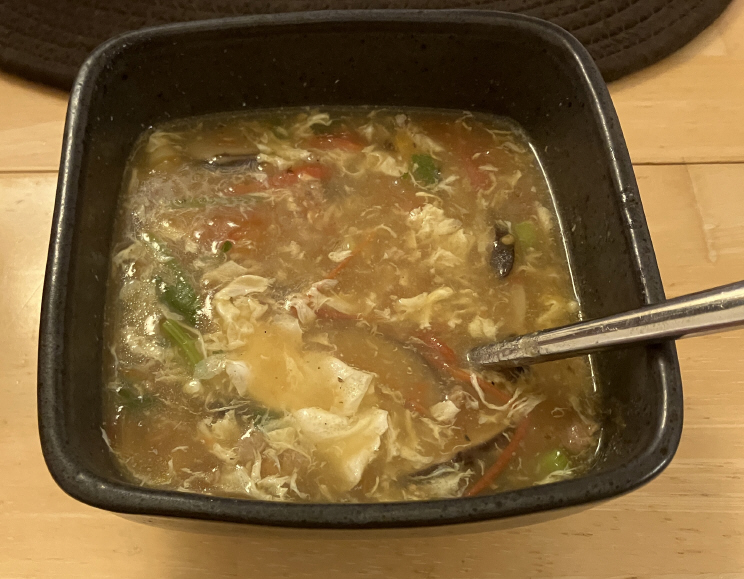

番茄鸡蛋蘑菇烩汤 ★ Tomato, Egg and Mushroom Soup
 3 servings
3 servings 20 minutes
20 minutes-
 youtube
youtube
 Sweet
Sweet Sour
Sour Umami
Umami
可口酸甜热汤

- 3-4 个 西红柿
- 7-10 个 蘑菇
- 一小把 香菜
- 2 根 小葱
将西红柿、蘑菇切块。香菜、小葱切段。葱段要细。
- 1 壶 开水
- 3 个 鸡蛋
烧开水，打匀鸡蛋成蛋花。
- 少许 油
锅热，放油，翻炒西红柿块，直到大部分软烂。
- ……
放入香菇一起翻炒到断生。
- ……
加入开水，煮开。
- ……
锅中放水，大火烧开。
- ……
勾芡，下入蛋花，慢慢绕圈淋入。
- 少许 白胡椒粉和盐
等待蛋花熟后，撒入白胡椒粉和盐，搅拌均匀。
- ……
最后撒上香菜葱花碎即可出锅啦！
- ……
备注：可自行实验多种配菜来增加风味与营养。